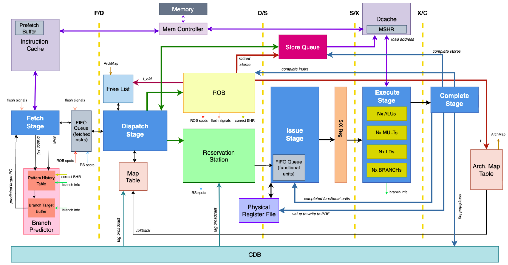

R10K Style Out-of-Order Processor
SystemVerilog • Synopsys Design Compiler • Synopsys Verdi • CPU Microarchitecture
An N-way scaled out-of-order processor based on the R10K architecture, featuring GShare branch prediction, stream buffer prefetching, and an associative data cache.

Top-level block diagram of the N-way superscalar pipeline.
Architecture at a Glance
- Fetch/Dispatch: Up to N instructions/cycle
- Reservation Station: 8 entries
- Reorder Buffer (ROB): 15 entries
- Physical Registers: 64 registers
- Caches: 256B I-Cache (Non-blocking) | 256B D-Cache (4-way associative)
Pipeline Stages and Details
Fetch Stage
Our fetch stage retrieves up to two instructions per cycle. The stage requests 64-bit aligned blocks from the ICache, employing dynamic alignment logic to correctly package two instructions (aligned PC) or a single instruction (unaligned PC).
To manage pipeline flow, the stage couples tightly with the Instruction Queue (IQ). It monitors available slots and, upon detecting backpressure, transitions to a stall state that latches incoming cache data to prevent data loss. PC updates are strictly sequential (+4 or +8 bytes) unless overridden by an immediate branch prediction or a pipeline flush from the backend.
Instruction Queue
The IQ serves as a buffer with a depth of 2N entries to keep instructions in order up to the dispatch stage for ROB. Implemented as a circular FIFO, it supports simultaneous read and writes of up to N instructions per cycle. Critical to its design is a lookahead mechanism that pre-calculates the maximum number of dispatchable packets by finding the minimum between the current queue count, available ROB slots, and free RS entries. This ensures the Dispatch stage only consumes packets that immediately fit into backend resources. Flow control is maintained via a spots_available signal that backpressures the Fetch unit when the queue is near capacity, while a global branch_mispredict_flush triggers an instantaneous reset of the head and tail pointers to scrub speculative instructions.
Dispatch
The dispatch stage feeds into the ROB, parallelizing decoding, register renaming, and resource arbitration. It converts IQ packets into Dispatch packet formats while calculating the actual_dispatch_count based on the availability of Issue Queue slots, Store Queue (SQ) entries, and Free List registers. The logic identifies the first instruction that fails any of these constraints and truncates the packet at that "fail limit," ensuring only fully supported instructions proceed. During renaming, destination registers are mapped to physical tags popped from the Free List, with a specific optimization that assigns a static zero tag to x0 writes to preserve physical registers. Simultaneously, the stage assigns SQ indices relative to the current tail, allowing store instructions to be dispatched out-of-order while strictly reserving their commit order.
Reservation Station
The centralized RS enables out-of-order issues by holding decoded instructions until their operands and memory dependencies are satisfied. It accepts up to N new instructions per cycle, selecting free entries using a priority allocator and storing the full dispatch packet for later issues. Wakeup is handled by comparing all entries against each CDB broadcast each cycle, immediately setting ready bits for matching tags, including same-cycle matches during allocation. Issue uses a parallel ready-mask and selector to choose up to N ready entries per cycle. An entry is ready when both operands have been woken up and, for loads, when its dependent store has committed in the SQ. Issued entries are freed immediately (free-on-issue), updating the RS’s open-slot bitmask and available count. On a branch misprediction flush, the RS clears all entries and restores all slots to free, ensuring no speculative state remains and allowing the pipeline to restart cleanly.
ROB
The ROB maintains precise state using a circular buffer. It supports superscalar operations, allowing both the head and tail pointers to advance by multiple slots per cycle. Instructions enter at the tail and await execution results. To handle completion, the ROB scans active entries from head to tail. It employs an "oldest-match" policy, ensuring that incoming completion packets are applied to the oldest corresponding instruction, which correctly resolves ambiguity for instructions sharing tags such as ‘0’ tags. Retirement occurs in-order from the head. To guarantee memory consistency, the logic enforces serialization: it stalls the retirement of HALT or WFI instructions if the Store Queue (SQ) is busy or if a store instruction is currently retiring. Upon detecting a branch misprediction at the head, the ROB acts as a recovery unit. It triggers a global pipeline flush, collapses the tail pointer to the head to clear all speculative instructions, and outputs the correct target PC and branch history for immediate recovery.
Free List
Our free list implementation enforces a static mapping of architectural r0 to physical p0. Branch misprediction recovery is achieved by reconstructing the available register state based on the Architectural Map Table. To support N-way dispatch, the module exposes a vector of N candidate registers paired with valid bits. During resource exhaustion, the valid bits are deasserted, allowing the Dispatch stage to precisely detect availability limits without requiring valid data on the register bus.
Functional Units
We have 4 types of functional units - ALU, Multiplier, Load Unit, Conditional Branch Unit. The number of each functional unit is equivalent to N. This was done so that no matter what execution lane an instruction was issued too, any operation could be performed. We are able to limit the number of ALU’s and Multipliers that are actually used through defined variables.
Map Table & Arch Map Table & Physical Registers
The map table tracks the dynamic mapping between architectural and physical registers, and it updates both combinationally and sequentially. On a normal cycle, the rename logic writes to new_map combinationally and updates map combinationally with the values of new_map. On a branch mispredict the signal branch_flush, the speculative map state is instantly discarded and initialized directly from the committed architectural map, with all physical registers being marked as ready (setting the plus_bit to 1).
Memory Interface
Non-Blocking Instruction Cache
In regards to the instruction cache’s interface with memory, it reads from the two ports provided by the memory module. As a result, it can stream in 4 instructions at the same time, enabling it to look ahead by 3 instructions (one of the instructions is the “current” instruction). When a requested address is not found in the cache, the fetch stage stalls and waits for the cache to read the correct address from memory. More information on how prefetching works can be found in the “Prefetching” section.
4-Way Associative and Non-Blocking Data Cache
The D-cache implements a 4-way set-associative, write-allocate, write-back design with 64-bit lines and 8 sets. Incoming load and store requests are serialized through a controller FSM that performs tag comparison, hit/miss handling, and refills through a single-entry MSHR. Stores merge byte/half/word writes into the cached line using shifting and masking, update the target way, and issue an aligned block write to memory. Loads return the appropriately shifted 32-bit value on a hit; on a miss, the cache sends an aligned block read, waits for the tagged response, refills the victim way using a per-set LRU counter, and replays the load.
Memory Controller
The controller manages pipeline backpressure by prioritizing store commits over load requests and stalling the SQ only when the cache or memory interface is busy. Tag, data, and valid arrays are implemented using per-way memDP banks with bypassing, and all read/write decisions (hit way, victim way, and data merge path) occur combinationally before the FSM issues a request or updates the arrays. Full-line refills, writebacks, and miss requests all use aligned block addresses to maintain correctness with the external memory controller. The cache flushes nothing speculatively and relies on the ROB/SQ to ensure memory ordering, reporting write_pending to prevent early retirement of memory instructions.
Advanced Features
N-way Scalar
Defined by the global parameter N, the pipeline processes up to N instructions per cycle. The Dispatch stage instantiates parallel decoders and employs combinational intra-packet dependency logic, ensuring instruction i immediately observes register updates from instruction i-1. A priority encoder manages resource allocation, truncating packets based on the first "fail" condition from the ROB, SQ, or Free List. To sustain this throughput, backend structures (Map Table, Free List) are N-ported for simultaneous access, while queue control logic utilizes variable-width modulo arithmetic to advance pointers by 0 to N slots instantaneously.
Prefetching
To mitigate memory latency, the Instruction Cache employs a non-blocking prefetcher with a "Stream Buffer" architecture. Every cycle, the logic scans a four-line lookahead window, performing simultaneous redundancy checks against both the Main Cache and Prefetch Buffer. A priority encoder identifies the earliest missing line and issues a MEM_LOAD, utilizing transaction tags to correctly route returning data into the buffer asynchronously. A strict "Buffer-to-Main" promotion policy is enforced: data is initially placed in the buffer and only written to the Main Cache upon a valid processor request, preventing cache pollution from unused speculative fetches.
GShare Branch Predictor
The branch history register was incorporated as a 4 bit array in the fetch stage which was updated sequentially through the use of “bhr” and “next_bhr.” When assembling the fetch packets, the fetch stage performs a primitive “decode” to detect all branching instructions. Depending on the type of branch, the fetch stage will forecast the branch instruction as taken or not taken. Each instruction contains a branch history register in order to maintain a “version” of the branch history along with its speculation. The result of the exclusive ‘or’ operation between bits 6 through 9 of the PC and the branch history register is utilized to index into the pattern history table. In the branch target buffer, the fetched PC will be utilized to index the branch target buffer where each entry in the data structure contains a struct with tag bits to help avoid aliasing, a valid bit to determine whether an entry in the data structure is empty or not, and the target PC. The output target PC and the output of the prediction history table are sent back to the fetch stage, ready to be used on the next clock cycle. On a mispredict, the reorder buffer will adjust the branch history register and send it to the fetch for it to use when assembling the fetch packets. Additionally, the pattern history table and the branch target buffer are both updated in order to adjust for the incorrect speculation.